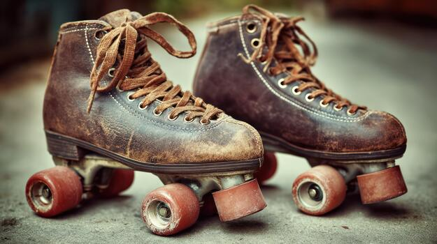

Fun Facts About Roller Skating
Roller skating has a long and interesting history. Here are some fun facts about this popular activity.

Did You Know?
- The earliest roller skates were developed in the 1700s.
- Roller skating became especially popular as a social activity during the 1970s and 1980s.
- Roller skating uses many muscles in the legs and core while also requiring balance and coordination.
- Roller rinks often combine skating with music, colorful lighting, games, and special events.
- There are several styles of roller skating, including recreational skating, artistic skating, speed skating, roller derby, and rhythm skating.
Skating Is for Everyone
People of many ages and experience levels can enjoy roller skating. Beginners can start slowly while experienced skaters can practice advanced turns, dance moves, and other techniques.